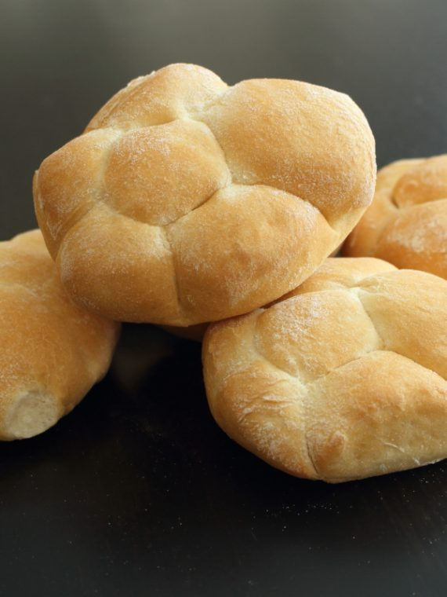
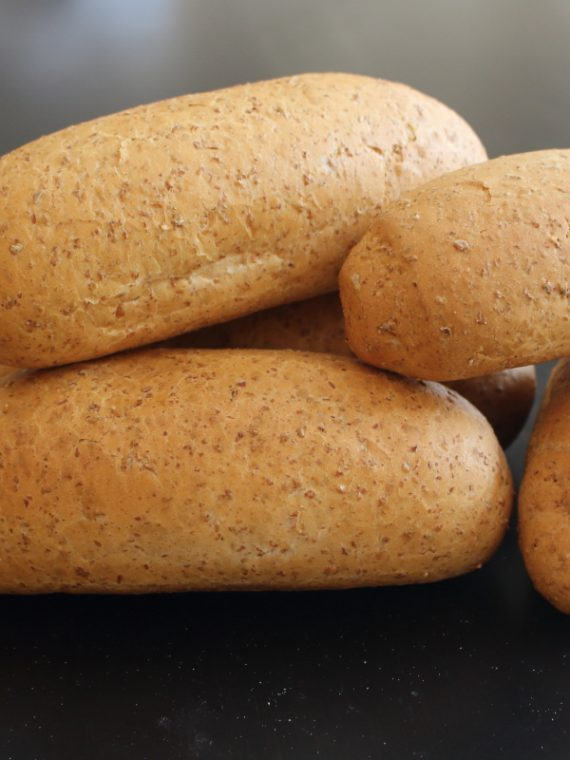
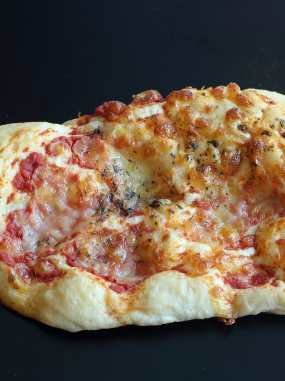
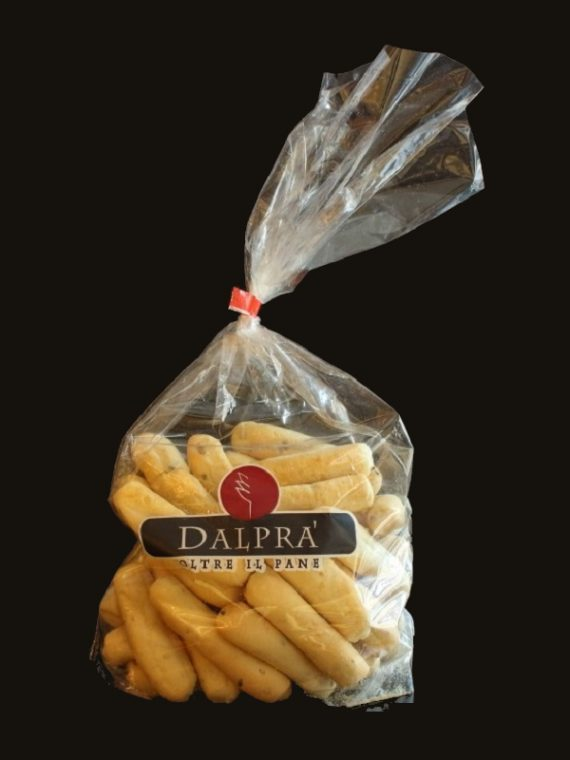
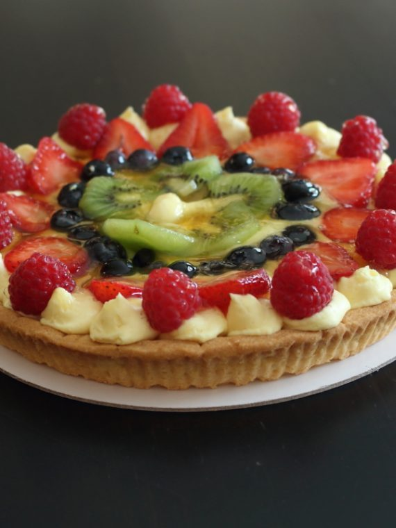
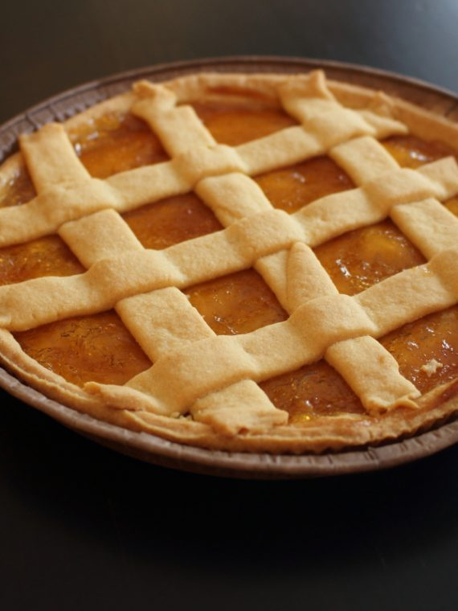
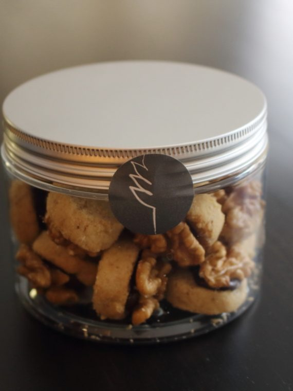
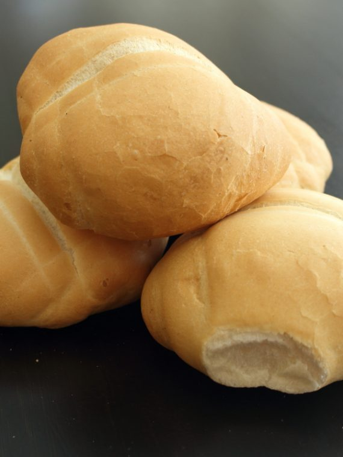

Le ricette di Riccardo Dalprà, portate avanti dai figli dal 1971: pane, salati e pasticceria, con lo zelten, la colomba e il panettone delle feste.
Pane, salati e pasticceria, fatti nel nostro laboratorio.








Il bollino con la mezza spiga cambia colore, e ogni colore è una linea di prodotti.
La linea classica: la qualità con la tradizione, materie prime scelte con la cura di sempre.
La «black label»: materie prime di altissimo pregio e una confezione più curata.
Ingredienti da agricolture con protocolli che tutelano ambiente e consumatori, o a km zero.
La linea fitness, l'ultima nata: prodotti nutrienti e bilanciati per chi fa sport.
La linea vegana: ingredienti e ricette che seguono i principi vegani.